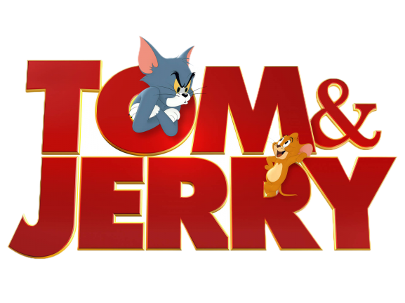
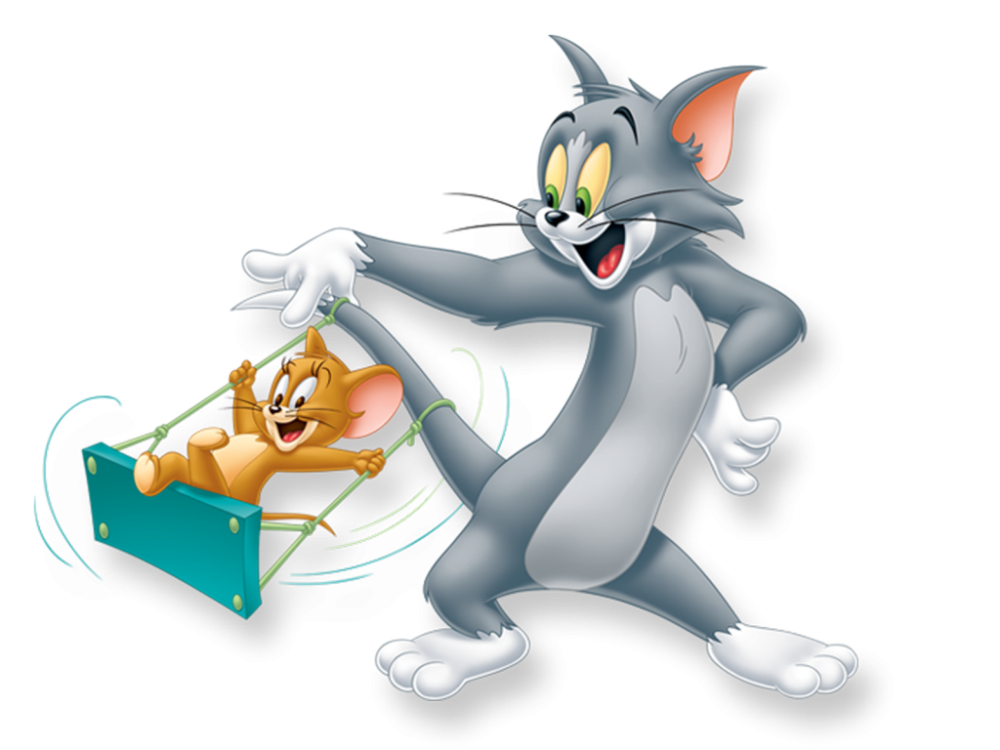

Tom and Jerry
Tom and Jerry is an American animated media franchise and series of comedy short films created in 1940 by William Hanna and Joseph Barbera. Best known for its 161 theatrical short films by Metro-Goldwyn-Mayer, the series centers on the rivalry between the titular characters of a cat named Tom and a mouse named Jerry. Many shorts also feature several recurring characters... read more
Tom and Jerry
Five Fun Facts about Tom and Jerry
According to Metv.com, these are the 5 fun facts you need to know about your favorite Tom and Jerry Character.
- They were originally named Jasper and Jinx.
- There was later a contest to name the characters.
- They were named after a cocktail.
- They won seven Oscars.
- They were in a live-action Gene Kelly movie.
That is all you need to know about the Tom and Jerry Character on this static webpage for now.
We appreciate your visit, . Look forward to seeing you soon.